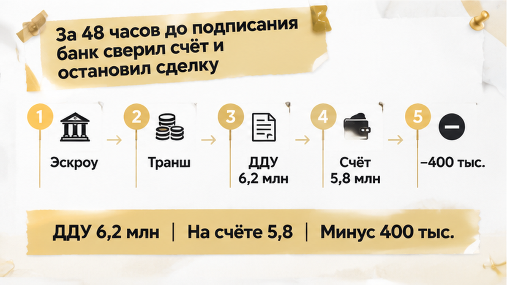
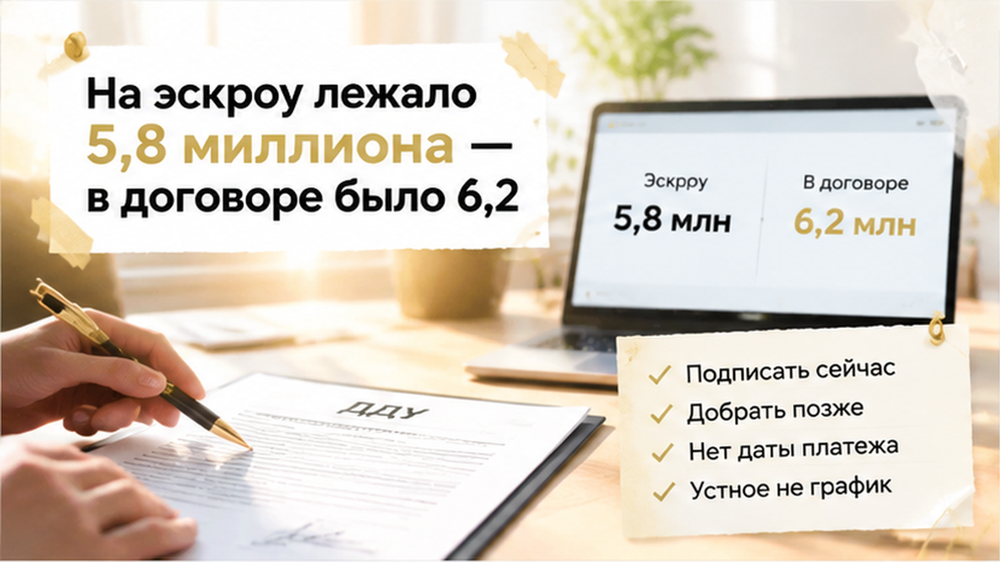
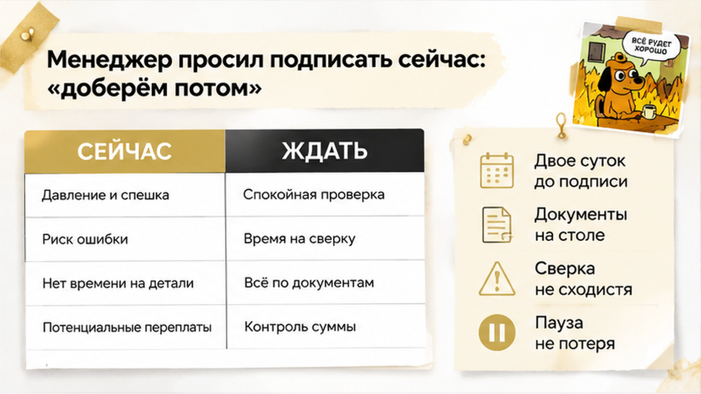
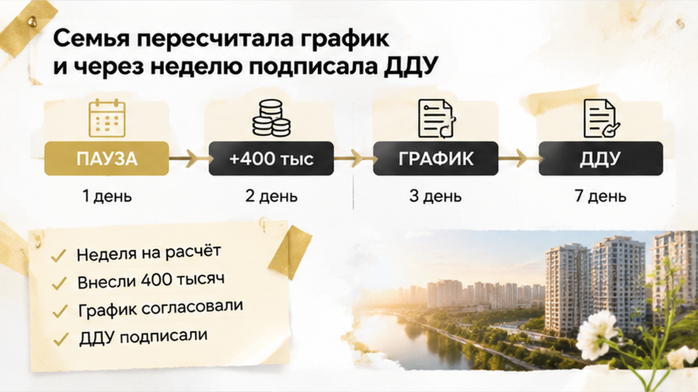

В Тюмени семье не хватило 400 тысяч рублей до полной суммы на эскроу — банк остановил подписание ДДУ за двое суток до сделки. Ипотека уже была одобрена, счёт открыт — первый транш кредита и материнский капитал поступили. В офисе банка лежал договор на квартиру за 6,2 млн рублей, рядом — выписка по эскроу с остатком 5,8 млн. Менеджер предложил подписать документы сейчас, а разницу внести позже — банк попросил сначала согласовать сумму и график платежей. Для семьи это стало не отказом от квартиры, а паузой, чтобы спокойно пересчитать всю оплату.
Я, Святослав Шакин, The Риэлтор из Тюмени. Рассказываю о таких моментах простым языком: что проверить в новостройке до подписи, пока деньги ещё можно пересчитать, а вопросы — задать без спешки.
Для покупателя одобрение ипотеки часто звучит как финальная команда: банк сказал «да», застройщик подготовил договор, эскроу открыт — можно подписывать. В действительности это разные этапы — каждый нужно пройти отдельно. Сначала банк одобряет заём, затем стороны фиксируют цену квартиры в ДДУ — договоре участия в долевом строительстве. После этого деньги должны поступить на эскроу из предусмотренных источников — кредита, собственных средств, материнского капитала.
В этой истории ипотеку одобрили, эскроу открыли, первый транш кредита и материнский капитал зачислили — семье оставалось дождаться подписей. Только открытый счёт ещё не означает, что квартира полностью оплачена: важны сумма поступлений, сроки каждого платежа. По смыслу статьи 15.4 214-ФЗ оплата считается выполненной после зачисления денег на эскроу. Поэтому банк сверяет цену квартиры, размер кредита, график выдачи траншей — затем проверяет, сколько денег действительно пришло. Семейную ипотеку могут одобрить, а эскроу при этом не откроется или не будет готов к перечислению средств. Здесь счёт был открыт — его остаток не совпал с ценой квартиры.
Первый транш не обязательно равен всему кредиту — материнский капитал тоже не закрывает автоматически любой разрыв. Поэтому полезнее спросить не «банк всё сорвал?», а какая сумма должна оказаться на эскроу к моменту подписания и подтверждена ли она документами?
За день или два до подписания банк сверил документы с поступлениями — обнаружилась разница в 400 тысяч рублей. Квартира по ДДУ стоила 6,2 млн рублей, а эскроу был пополнен до 5,8 млн. Покупателю легко сказать: «Деньги же уже есть» — большая часть суммы действительно поступила. Для банка важно другое: сколько положено внести по договору, сколько внесено, когда придёт остальное. Разрыв может казаться поправимым — от этого оформление ещё не становится готовым. Кредит семье не отменяли, эскроу не закрывали — имеющихся денег просто не хватало до указанной цены.
В документах Сбербанка, например, предусмотрено подтверждение полной суммы на эскроу — одного сообщения о поступлении денег недостаточно. Для счёта в Сбербанке нужна выписка, для счёта в другом банке — платёжные документы. В отдельных условиях указан срок пять рабочих дней с даты выдачи кредита, в том числе каждой его части. Это пример условий Сбербанка — у другого банка требования могут отличаться.

Общий принцип простой — банку нужно видеть поступившие деньги, сверять их с условиями покупки. Фразы «ипотеку одобрили», «эскроу открыли», «первый транш пришёл» ещё не подтверждают, что вся цена обеспечена. Проверять нужно три позиции — стоимость квартиры, остаток счёта, платежи, которые должны прийти дальше. Здесь лучше опираться не только на слова менеджера — нужны выписка, кредитный договор, согласованный график.
Похожие остановки бывают по другим причинам — внешне пауза та же, а разбираться приходится с другим вопросом. В другой тюменской сделке банк остановил оформление после изменения ипотечной ставки накануне ДДУ. Там вырос платёж — в этой семье ставка оставалась прежней. Стоп-сигналом стало расхождение между ценой квартиры и деньгами, которые уже поступили.

До подписания оставалось около двух суток — в офисе банка лежали документы на квартиру, график кредита. Всё выглядело готовым: одобрение есть, счёт открыт, деньги поступили. Перед оформлением банк проверил цену строящейся квартиры, условия кредита, график перечислений — сравнил их с остатком эскроу. Эта сверка показала, что продолжать пока рано. Покупатель видит крупную сумму, думает: «Основное уже внесли». Профи спрашивает: «А вся оплата сходится с договором — и по сумме, и по срокам?» Первый транш закрывает часть кредита, материнский капитал — свою часть оплаты. Даже после обоих поступлений нужно понимать, откуда придёт остаток, когда его ждать.
Банк приостановил оформление — попросил сначала согласовать сумму и график. Это не отказ в ипотеке, не потеря квартиры — нужно выяснить причину расхождения, затем исправить расчёт. Не стоит путать эту ситуацию с той, когда семейную ипотеку одобрили, а эскроу не открыли. Там проблема была в самом счёте — здесь он работал, пересмотра требовала оплата.

Менеджер предложил не переносить подписание — недостающие деньги внести позднее, как будто речь об обычной задержке. В словах «доберём потом» не было главного — источника денег, даты платежа, согласия банка. Устное обещание не заменяет согласованный график. Оплата частями сама по себе возможна — кредит, накопления и маткапитал могут складываться в общую сумму. Такой порядок должен быть предусмотрен документами, а перечисления — укладываться в нужные сроки. Просто решить за столом, что остаток подождёт, здесь не получится.
Я бы просил разложить оплату по шагам — сколько должно быть к нужному этапу, сколько уже зачислено. Дальше — откуда придёт остаток, когда его ждать, подтверждает ли банк возможность подписания. Каждый ответ нужно сверять с документами — вместо «обычно так делаем» нужны конкретные сумма, источник, срок. Спорить с менеджером незачем — достаточно спокойно попросить: «Покажите, как этот порядок согласован с банком и договором». Пока ясного подтверждения нет, перенос разумнее подписи под устные обещания.
В этой сделке банк предложение «добрать потом» не принял — семья тоже не стала торопить подписи. Оформление отложили, вернулись к расчёту: какие деньги есть, каких не хватает, как согласовать их поступление.

После остановки семья сверила цену квартиры с остатком эскроу, размером кредита, собственными средствами. Одобрение банка давало возможность покупки — открытый счёт ещё не подтверждал, что для полной оплаты всё собрано.
Материнский капитал входил в расчёт — обнаружившуюся разницу он не закрывал. Менеджер банка вместе с участниками сделки заново согласовал порядок перечислений, проверил график. Недостающие 400 тысяч рублей внесли — после этого банк продолжил процедуру. Примерно через неделю семья подписала ДДУ без потери квартиры. Пауза позволила убрать расхождение заранее — не пришлось оставлять этот вопрос до следующего этапа. В другой сделке срок исправления зависит от условий кредита, документов, источника денег, процедуры конкретного банка.
Не стоит смешивать эту историю с другими стоп-сигналами — при неоткрытом эскроу или изменении ставки действия будут другими. О похожей ситуации с ростом ипотечного платежа я писал в материале о приостановке сделки из-за изменения ставки. Здесь ставка не менялась — счёт был открыт, пересчитать пришлось именно источники оплаты.
Если менеджер предлагает подписать ДДУ при нехватке 400 тысяч на эскроу и обещает «добрать потом», вы бы подписали или ждали полного совпадения сумм?
Перед подписью нужна вся цепочка платежа — от стоимости квартиры до последнего перечисления. Одобренный кредит, цена покупки и фактический остаток эскроу — разные величины, которые сами собой не совпадают.
| Что проверить | Где искать подтверждение | Какой вопрос задать | Что может остановить сделку |
|---|---|---|---|
| Цена квартиры по ДДУ | Проект и окончательная редакция ДДУ | Какая сумма должна быть полностью внесена на эскроу? | Цена выше суммы кредита и подтверждённых собственных средств |
| Одобренная сумма кредита | Решение банка и кредитный договор | Вся сумма выдаётся сразу или частями? | Очередной транш ещё не выдан или отличается от ожиданий |
| Фактические деньги на эскроу | Выписка по счёту или платёжные документы | Сколько поступило на счёт сегодня? | Счёт открыт, но части цены ДДУ на нём нет |
| График перечислений | Кредитный договор, условия эскроу и схема сделки | Кто, когда и сколько перечисляет? | Срок или порядок платежа не подтверждён банком |
| Собственные средства и материнский капитал | Документы по источнику денег и условия сделки | Учтены ли средства и когда они поступят? | Источник заявлен, но зачисление или срок не подтверждены |
По закону об участии в долевом строительстве оплата проходит через эскроу — внесёнными деньги считаются после поступления туда. Открытие счёта лишь запускает эту схему — полной оплаты оно не подтверждает. Правила нужно искать в документах своего банка, а не переносить из чужой покупки. Например, Сбербанк требует подтвердить полную сумму выпиской, для счёта в другом банке — платёжными документами. Срок составляет пять рабочих дней после выдачи кредита или его части — это условие Сбербанка, не общее правило.
Кредит, накопления и материнский капитал могут приходить разными платежами — важно соблюсти общую сумму, предусмотренные сроки. Их сверяют с ДДУ, условиями кредита — ни один источник денег не должен потеряться в расчёте. Если договор расторгнут, возврат с эскроу проходит по процедуре банка — при ипотеке сумма может пойти в погашение долга банку-кредитору. Перед подписанием попросите полный расчёт: стоимость квартиры, уже внесённые деньги, сумму банка, остаток покупателя. Пусть цифры будут в письме, выписке или документе — не только в разговоре за столом.
Разбираю сделки с новостройками в Тюмени без канцелярита — в Telegram The Риэлтор и MAX Святослава Шакина. Подписывайтесь, если хотите замечать такие нюансы до подписания документов.
Семья получила свою квартиру — лишняя неделя ушла в проверку, а не в попытки разобраться после оформления. Полезная привычка здесь простая: у каждого платежа должны быть понятный источник, дата, подтверждение банка. Если вместо ответа слышите «потом разберёмся», можно спокойно отложить документы — без спора, без паники. Покупателю не нужно угадывать, как всё сложится: попросить ясный расчёт — нормальная часть управления своей покупкой.